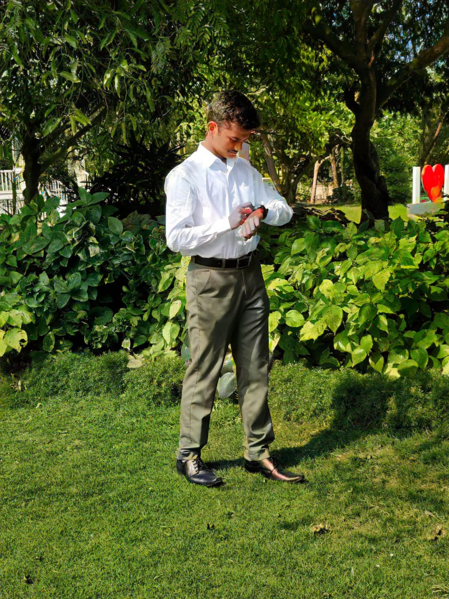
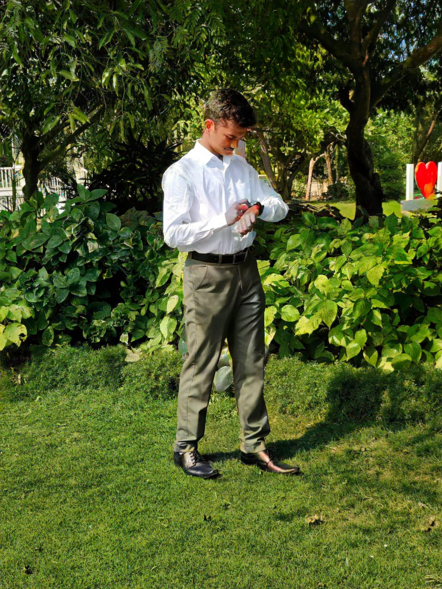
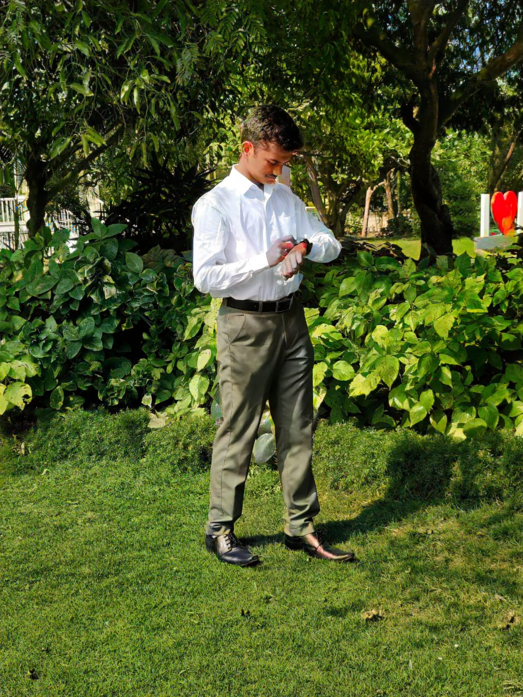

Nishant Malay Mishra
All My Projects


A real-time system for schools to automatically assign teacher substitutions based on availability and schedule. Designed to eliminate manual effort and errors.
Tech: Python, Scheduling Algorithms, Automation

A Python, Pygame, and OpenCV-powered robot that navigates dynamically generated mazes using real-time hand gestures. Includes cvzone-based gesture control and keyboard/voice overrides.
Tech: Python, OpenCV, Pygame, cvzone

A simulation of a line-following robot using computer vision to detect and follow paths. Useful for algorithm prototyping and robotics education.
Tech: Python, OpenCV, Robotics Simulation

A basic OCR engine that extracts text from images using Python and OpenCV. Demonstrates the core concepts behind text recognition and preprocessing.
Tech: Python, OpenCV, Tesseract (optionally)

Control lights remotely via Bluetooth using a custom Python application and microcontroller. Useful for IoT and home automation demos.
Tech: Python, Arduino/ESP32, Bluetooth

Recognizes human emotions from hand gestures using computer vision and machine learning. Explores the intersection of gesture recognition and affective computing.
Tech: Python, OpenCV, ML